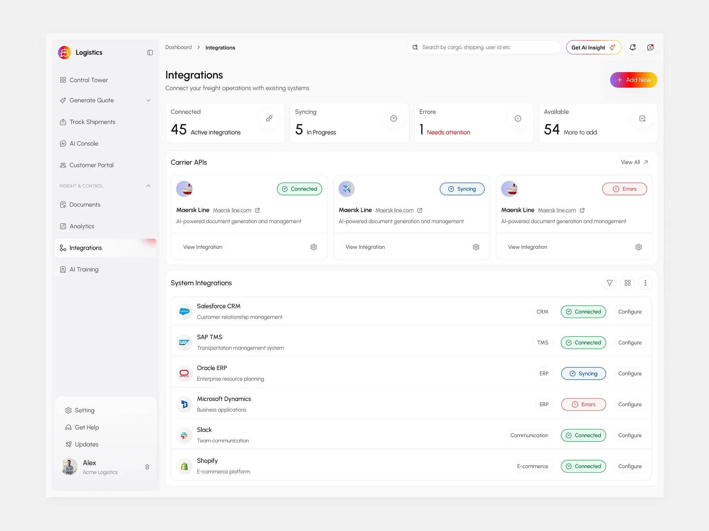

Past
AI research began decades ago, focusing on teaching computers to solve problems.

AI helps computers perform tasks that usually require human intelligence.
AI helps students learn and understand new information.
AI can help analyze medical images and support healthcare professionals.
Artificial intelligence continues to evolve and may transform the way we live, learn, and work.
AI research began decades ago, focusing on teaching computers to solve problems.
AI is used in virtual assistants, education, healthcare, and content creation.
AI may help develop smarter cities, improve medical research, and create more personalized learning experiences.